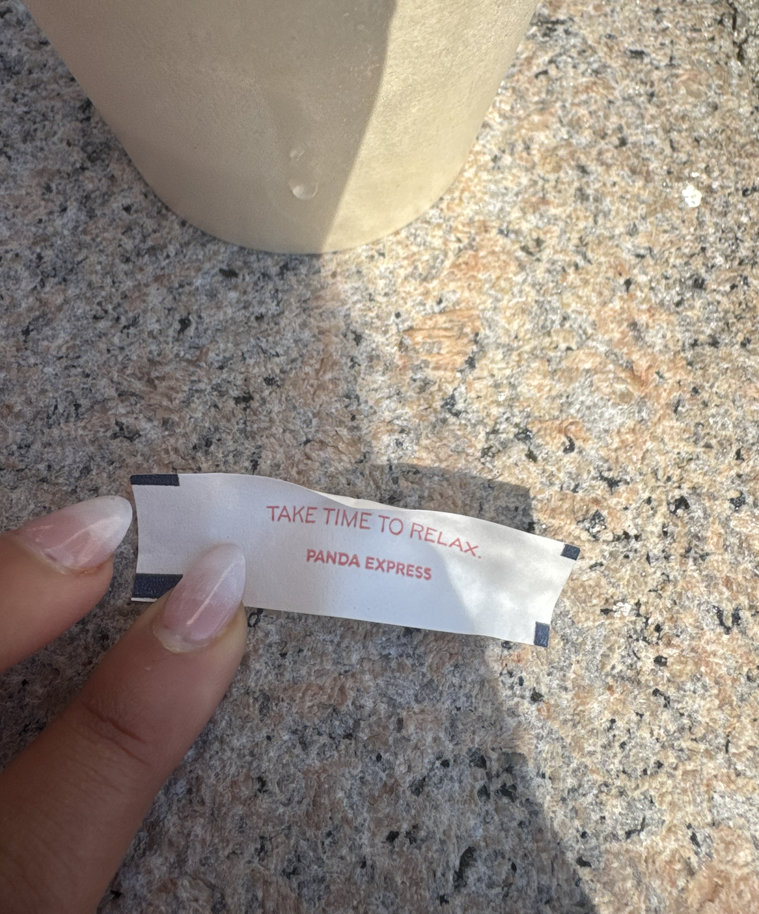

Strain
7/12/26
You never know how much something means to you until it’s taken from you. For the past six weeks, I’ve been averaging running around 24 miles per week, which I haven’t held onto for this long, ever. Last week was a cutback, which meant I did 17 and called it quits.
I was way too excited to get back to it this week. So excited I didn’t sleep well most nights, waking up at 4am to hit Central Park around 5, beating the sun, seeing the rats, and getting a kick out of my morning. The problem was that I did this thrice in a row (M, T, W) because I had a Barry’s class Thursday evening. Turns out my lower back didn’t like that Barry’s class at all, because when I came home and crashed on my couch at 10pm, I felt a pretty sharp pain in my lower back. I assumed it would go away with sleep in time for my Saturday long run.
It didn’t. Saturday rolled around, I rolled out of bed at 5 and the lower back pain was still there. And to my surprise, it was worse. I wasn’t sure what to do, so I got dressed anyway, had my pre-run toast, electrolytes, and left my apartment. The weather was stunning, but something was off. My usual excitement was dampened. I had a feeling I wouldn’t be able to run.
I walked over to the park, started the CPW climb, and was a complete brick. The stiffness wasn’t the problem though, it was the localized pain in my back. Soreness typically goes away after you start running, localized pain just gets worse. The long run was not going to happen. I stopped my Garmin 0.15 miles in and walked to the pool near 102nd. The ducks were asleep and I just cried on the bench watching them.
I walked home, still crying, and someone said good morning to me before asking me for money. Someone then asked me if I was running the 4 mile race in the park today. I got to my apartment, changed, and went back to a deep sleep.
The rest of the day was horrid. I’m in the middle of a training block, I had momentum going, and out of all things that failed me, it was my lower back. To be fair, this was bound to happen. I’ve been loading my entire body with not nearly enough rest.
I walked to the bookstore and got Murakami's What I Talk About When I Talk about Running. I listened to it when I started running in 2020, alone, slow, 18, somewhere in North San Jose. I just felt like I needed to be close to the sport somehow, vicariously running by reading someone else write about running.
I realized how much I relied on this sport to hold my life together in New York. My first week in Berkeley, I found a route that went up Euclid, past the Rose Garden, and up Tamalpais path (which has 184 steps) and back down home. It’s 1.81 miles with around 180 ft of elevation. I called it my medicine run, something I do regardless of how I feel. Tamalpais path grounded me in that city. Central Park grounds me in this one.
There’s a certain place I can reach while running (near mile 5 or 6) that I can’t reach in any other context. A void. A void that just doesn’t happen in everyday life, in lines, on a train, while doomscrolling. I kept chasing that void. But running is a sophisticated dance between your body and your brain. Your brain wants to go, but your body will not always cooperate. Sometimes your legs muscles haven’t caught up to your aerobic engine. Other times, you get a muscular strain in your lower back while doing RDLs in a dark room on a Thursday evening. And in those moments, it’s important to resist the urge to push through and listen.
Today, Sunday, in my despair, I was walking on Broadway when I saw a fortune cookie on the ground. I’ve been looking for some type of sign from God, explaining this, so I picked it up. I opened it outside Butler library and it said: “Take time to relax.”
